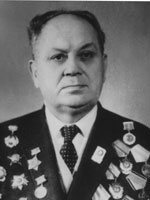

Шевченко Антон Юхимович
- (17 січня 1902, с. Липівка, нині Макарівського району Київської області) — український економіст. Доктор економічних наук. Професор.Біографія
- 1927 року став членом ВКП(б).- 1932 року закінчив історико-економічний факультет Київського педагогічного інституту професійної освіти.
- 1936 року після закінчення аспірантури в Інституті економіки захистив кандидатську дисертацію «Про резерви продуктивності праці в промисловості».
- У 1936—1941 роках обіймав посаду заступника директора Інституту економіки АН УРСР.
- Учасник Великої Вітчизняної війни, брав участь у бойових діях.
- 1948 року призначено на посаду завідувача кафедри політичної економії Київського університету, через півроку став деканом економічного факультету.
У 1955–1956 роках працював доцентом на кафедрі політичної економії.
- Потім працював у Вищій партійній школі при ЦК КПУ.
Наукова діяльність
Досліджував питання продуктивності праці в кам'яновугільній промисловості Донбасу. Науковий доробок Шевченка включає близько 30 робіт і статей, основними з яких є:- «Народне господарство України» (1947) — співавтор
- «Производительность труда в угольной промышленности» (1948)
- «Социалистический Донбасс» (1948)
Редагував видання «Очерки экономики народного хазяйства Украины» та ін. Шевченко займав посаду голови бюро економічної секції Республіканської спілки із розповсюдження наукових і політичних знань, був членом вченої ради Інституту економіки АН УРСР.